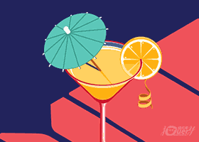

MyScroll，一款在顶部显示浏览进度同时支持丰富滚动事件的原生js插件。
// 指定距离触发
new MyScroll({
"event": [{
"height": "100%", //触发条件 支持px和百分比
"loop": true, //是否循环使用 true/false 设置false后执行执行一次后会销毁
"type": "up-down", //触发方式 支持up-down down-up all三种方式
"func": function () {
alert('我到底部了')
} //触发后执行的方法
}]
});
// 距离指定元素一定距离时触发
new MyScroll({
"event": [{
"el": "#testimg", //支持selector选择器或原生dom
"loop": false,
"height": "200px", //正值：指定元素出现后向下滑动相应长度触发事件 负值相反
"func": function () {
document.querySelector("#testimg").classList = ['animation1'];
}
}]
});
有任何想法和建议欢迎提出来。
